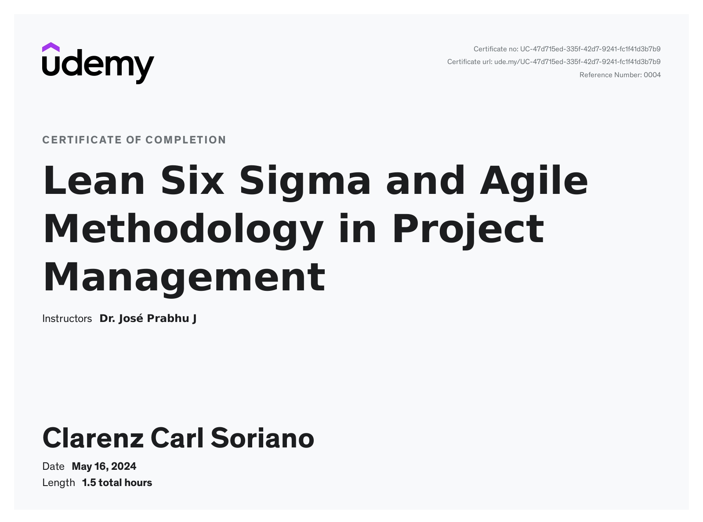

Here are some of the certifications I have acquired through my journey as IT and Data Analyst Professional

Mastering AI-Powered Prompt Engineering with AI Models
Through this certification, I have gained proficiency in prompt engineering and leveraging AI models such as Google Bard, ChatGPT, and BingChat. I have developed skills in creating compelling content, marketing prompts, and engaging social media content. Additionally, I have acquired basic knowledge of HTML, CSS, and JavaScript for website development, as well as expertise in summarizing diverse content types for better comprehension.

Excel VBA for Beginner to Advanced
Through this comprehensive course, I have gained proficiency in Excel VBA programming, advancing from a complete beginner to an advanced level. I have learned to record and edit macros, write and execute VBA code for manipulating worksheets and cells, and implement control structures, loops, and conditional statements. Additionally, I have developed skills in creating user forms, handling errors, and debugging code. The course has equipped me with advanced techniques such as working with arrays, files, and external data sources, and optimizing code for better performance. I am now capable of automating complex tasks, boosting productivity, and enhancing efficiency in Excel.

Create a GUI with Python
Through this course, I have learned to quickly create desktop applications using Python. The course covers making GUIs with various frameworks like PyQt, Tkinter, wxPython, and web-based interfaces, allowing easy switching between them. I have gained skills in creating and theming GUIs, interacting with them in Python, and understanding the basics of GUI app development. With just basic Python skills, I am now equipped to develop simple yet effective desktop apps.

Microsoft Azure: Hands On Training: AZ-900 AZ-104 and AZ-305
Through this comprehensive course, I have mastered essential Microsoft Azure skills needed to excel in cloud computing. The training covers cloud infrastructure management, utilization of Azure services, and fundamental Azure principles. I have gained practical experience in cloud deployment strategies, robust security practices, and cloud management techniques. This course has equipped me with hands-on abilities to navigate and manage resources on the Microsoft Azure Portal. With no prerequisites required, I have advanced my knowledge in cloud computing, positioning myself as a valuable asset in today's competitive job market.

Lean Six Sigma and Agile Methodology in Project Management
This course provided a deep dive into integrating Lean Six Sigma and Agile Methodology in project management. I gained skills in waste reduction, process improvement, and iterative development, along with proficiency in Lean tools like value stream mapping and Agile practices such as Scrum and Kanban. Through practical exercises and case studies, I learned to develop tailored project management approaches and establish performance metrics. Now equipped with the expertise to drive sustainable improvement initiatives and foster continuous improvement cultures, I'm ready to navigate the dynamic challenges of modern business environments.

Mastering SEO With ChatGPT Ultimate Beginner's Guide
Through the course, I mastered essential SEO components, learning to optimize websites for search engines effectively. I gained insights into leveraging ChatGPT for tasks like keyword research, content creation, and competitor analysis, enhancing my ability to drive organic traffic and improve website rankings. Additionally, I developed strategies for content creation, link building, and mitigating potential AI-related SEO risks, equipping me to navigate the evolving landscape of digital marketing with confidence and proficiency.

Google My Business. How to Master Powerful Tool for Company
Throughout the course, I honed my skills in fundamental SEO practices, adeptly optimizing websites for search engine visibility. Harnessing ChatGPT, I delved into keyword research, content crafting, and competitor analysis, augmenting my capacity to bolster organic traffic and elevate website standings. Furthermore, I formulated tactics for content generation, link establishment, and preemptive measures against AI-driven SEO hazards, empowering me to adeptly traverse the dynamic realm of digital marketing with assuredness and mastery.